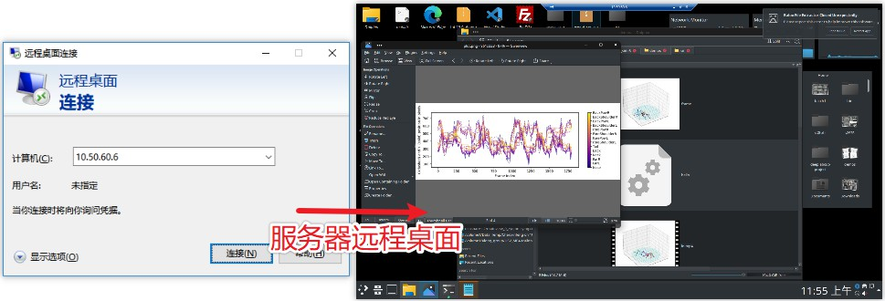

服务器基本操作
登录到服务器
服务器支持 远程桌面, ssh 和 vscode 的登录方式。推荐使用 vscode。
1. 使用 vscode [最推荐]
去官网下载 VSCODE，安装。之后再安装 Remote - SSH 插件。通过插件进入远程的服务器。在服务器中进入项目目录，再安装 Python 和 Jupyter 插件。
警告
首次用 VSCODE 登录远程SSH，会在服务器中自动下载软件并配置环境，请耐心等待。VSCODE 经常更新，会导致 Python 和 Jupyter
环境时效。出现这种情况，请更新 VSCODE 并重启软件。可以在设置里面取消 VSCODE 自动更新。
错误
早期的 WINDOWS 电脑的系统有问题，VSCODE中使用 SSH 连接时一直转圈圈或失败。请从 OPEN-SSH 官网安装最新软件并添加到搜索目录中，替换掉原来的 SSH。
2. 使用 ssh
在 windows 客户电脑中，按住 Win R 快捷键，在弹出的 运行 窗口中，输入 cmd 指令。在弹出的终端命令窗中，输入下面命令，并输入密码。
ssh chenxinfeng@10.50.60.6
提示
如果想要免密登录，可以去互联网搜索“ssh 免密登录”。
3. 使用远程桌面登录 [避免]
在 windows 客户电脑中，按住 Win R 快捷键，在弹出的 运行 窗口中，输入 mstc 指令。弹出远程桌面登录窗口。
输入服务器的IP地址，连接。接着输入用户名和密码。

在一般场景下，都推荐使用 VSCODE 作为服务器连接工具。并且建议在 VSCODE 中安装 CodeGeeX 这种AI编程助手（需要注册）。
| 适用场景 | 缺点 | |
|---|---|---|
| VSCODE | 文本和代码编辑、jupyter分析作图 | 经常更新，环境配置麻烦，消耗服务器性能 |
| SSH | 临时跑个脚本或修改环境 | 可视化差 |
| 远程桌面 | 图形界面程序 | 卡，受限于网络质量 |
一些基础技能
- 使用
htop查看 CPU 和内存使用情况 - 使用
nv命令查看 GPU 使用情况。
将下面命令添加到 ~/.bashrc,然后重启终端。
# 使用`nv` 命令查看 GPU 使用情况
alias nv='watch -n 1 nvidia-smi'
# 使用某几个GPU (0,1,2,3), 其它GPU不用
# $choosecuda 0,1,2,3 $choosecuda 3
function choosecuda {
if [ -z "$1" ]; then num=0; else num="$1" ; fi
CUDA_VISIBLE_DEVICES=$num
export CUDA_VISIBLE_DEVICES
}
# 使用 killcuda 强行释放本账户的 GPU 内存占用
# $killcuda
alias killcuda="ps -o pid= -u $(whoami) | \
grep -wFf <( nvidia-smi -q -x | grep pid | sed -e 's/<pid>//g' -e 's/<\/pid>//g' -e 's/^[[:space:]]*//' | sort | uniq ) | \
xargs kill -9 "
# 使用 killcuda2 强行释放所有账户的 GPU 内存占用
# $sudo killcuda2
alias killcuda2="fuser -v /dev/nvidia-uvm 2> /dev/null | xargs kill -9 "
# 查找当前文件夹内 python 文件中包含某字段的文件
# $findgrep WORDS
alias findgrep='find . -name "*.py" -type f -exec echo \"{}\" \; | xargs grep -n '
choosecuda用于选择 GPU 的ID。killcuda和killcuda2用户释放 GPU 的占用。
警告
使用 GPU 之前，先用 nv 命令看一下GPU的占用情况，执行choosecuda选择空闲的GPU使用。如果有一个GPU内存占用高但是运算占用率低，则使用 killcuda 释放。choosecuda只对当前的终端临时有效，在终端重启或跨终端则无效。
-
findgrep用于查找python代码 -
挂载群辉的云盘路径到服务器上。替换其中的
username为群辉的用户名，uid为服务器账号的用户名。会要求输入群辉用户的密码。
sudo mkdir /mnt/liying.cibr.ac.cn_usb3 #创建文件夹
# 挂载群辉的路径到服务器
sudo mount -t cifs -o \
vers=2.0,username=chenxinfeng \
//liying.cibr.ac.cn/usbshare3-2 \
/mnt/liying.cibr.ac.cn_usb3/ -o \
uid=chenxinfeng,file_mode=0766,dir_mode=0777
警告
file_mode=0766,dir_mode=0777 权限放得太宽，让所有用户都具群辉文件的修改权限。有可能会对群辉的文件的完全造成危险。权限控制太紧，可能没法顺利加载。请自行控制 file_mode 和 dir_mod 权限。